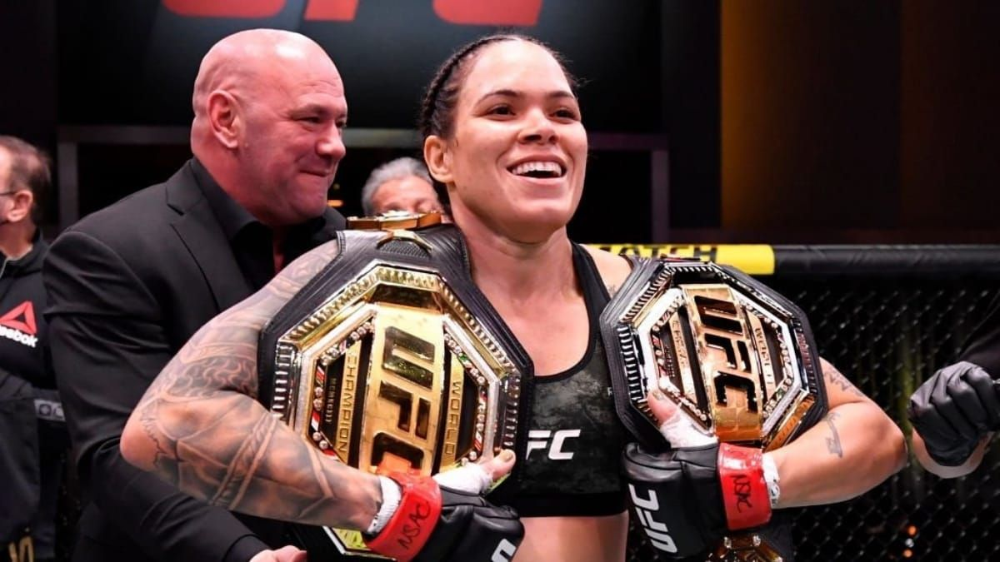
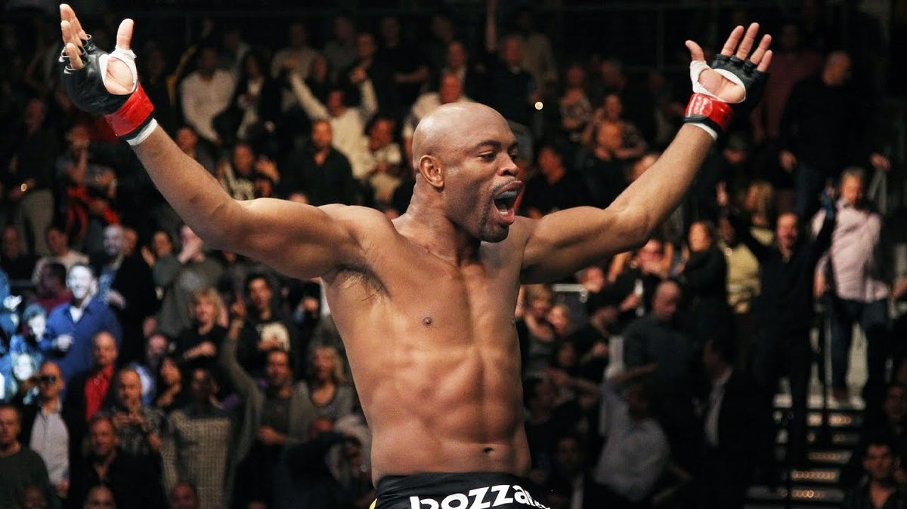
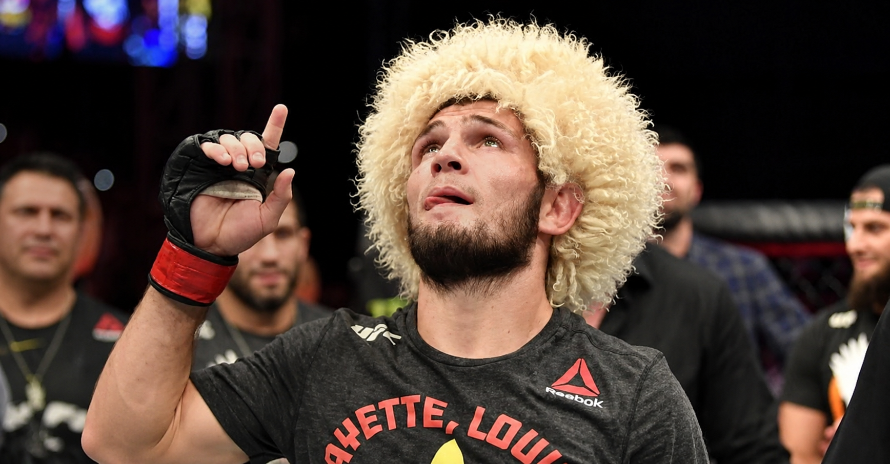
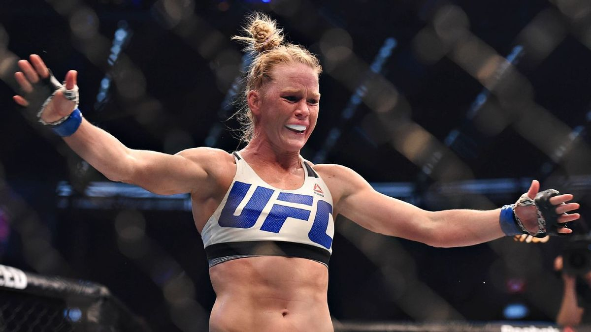
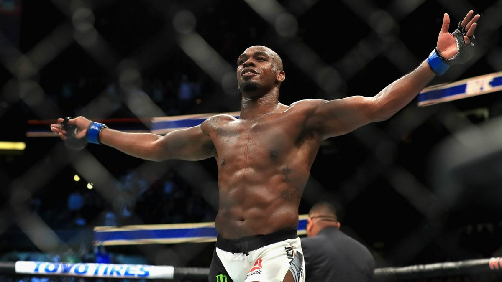
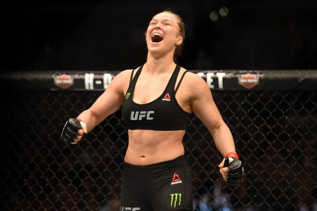
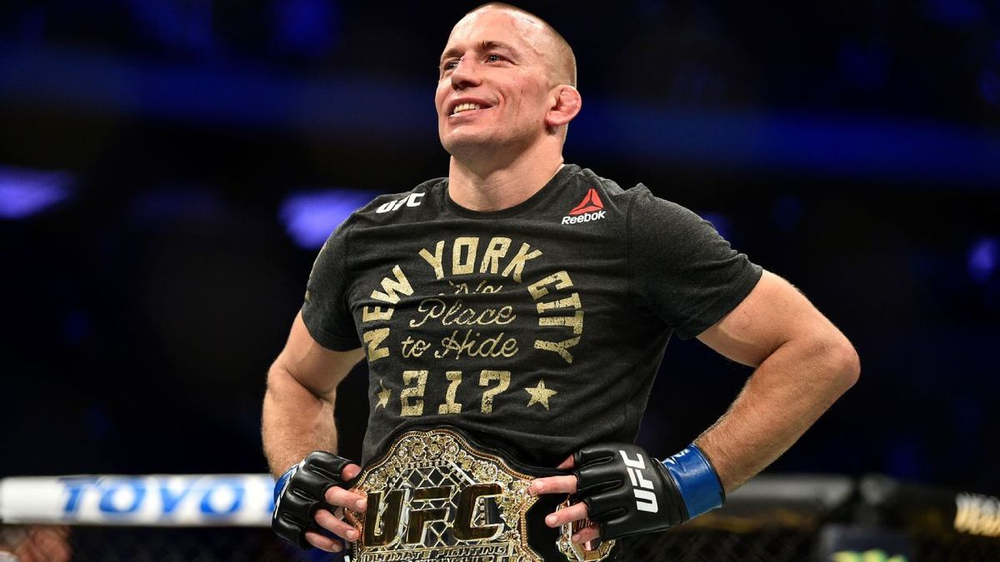

Momentos históricos do maior evento de MMA do mundo

Ao nocautear Cris Cyborg em apenas 51 segundos no UFC 232, Amanda Nunes conquistou o cinturão peso-pena e consolidou seu nome como a maior lutadora da história do MMA feminino.

Anderson Silva dominou a divisão dos médios com 10 defesas consecutivas de cinturão, estabelecendo um dos maiores reinados da história do UFC e consolidando seu legado como uma lenda do MMA.

Em 2016, Conor McGregor entrou para a história ao derrotar Eddie Alvarez no UFC 205 e conquistar simultaneamente os cinturões peso-pena e peso-leve.

Em 2020, após a morte de seu pai e treinador, Khabib Nurmagomedov se aposentou do UFC com um cartel perfeito de 29-0, encerrando sua carreira como um dos maiores lutadores da história do MMA.

No UFC 193, Holly Holm surpreendeu o mundo ao nocautear Ronda Rousey e conquistar o cinturão peso-galo feminino, encerrando um dos reinados mais dominantes da história do UFC.

Após anos dominando a divisão dos meio-pesados e derrotando diversos campeões e lendas do esporte, Jon Jones consolidou seu nome como o maior lutador da história do UFC e do MMA.

Com finalizações rápidas e enorme impacto mundial, Ronda Rousey foi responsável por popularizar o MMA feminino. Sua sequência dominante de vitórias e defesas de cinturão transformou a divisão feminina em um grande fenômeno e abriu portas para gerações futuras de lutadoras.

Após anos afastado do octógono, Georges St-Pierre retornou ao UFC em 2017 e conquistou o cinturão dos médios ao derrotar Michael Bisping, consolidando ainda mais seu legado entre os maiores da história do MMA.